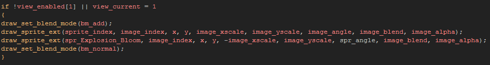
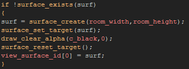

Tutorial
Page 7 of 10
Special Effects Part I
All the examples of surface use we have seen so far require us to draw something onto the surface and then draw the surface itself... but there are many occasions in which you may want to draw
everything that you can see on the screen to a surface so that you can later manipulate the entire image. in previous versions of GameMaker there was a special redraw function
that could be called outside of the draw event to achieve this, but with newer versions this is not possible. However, you can still achieve this effect by assigning a view to a surface.
What happens is that you tell GameMaker to take whatever is visible in a specific view, and instead of drawing that view to the screen, you draw it to a surface that has been assigned to it. in this way
you can draw the whole screen or part of the screen to a surface every step of the game. Bear in mind that when using this method, you may need to have two views active, as if you do not draw the
surface that has been assigned to a view at any time, then the screen will draw black (the view is not drawn on the screen) meaning that you will need a second view to actually draw everything.
With this in mind, let's set up our game to deal with two views and we will draw to our special effects surface in view[0] and to the screen as normal in view[1]. To start with, open up the room properties and
check the Enable the use of Views check-box, then select View0 and View1 and make sure that the box marked Visible when room starts is checked.
Once that is done we can create our surface object and effects, but before that it's worth noting that sometimes you may not want certain things to be drawn to the surface every step. To avoid this, you can add a
short code to check whether views are active and if so, which one is currently being drawn. In this way, you can make sure that whatever you want is not drawn while view[0] (the surface view) is being drawn, but
is drawn when view[1] is drawn. This means that the surface will not "catch" the draw event of that instance. A typical code for this would be something like this:

However, for the first effect that we are going to create this won't be necessary, so you can leave all the draw events of the objects in the game as they are.
We will create the new surface object now. So add a new object and call it "obj_Effects_Surface". This instance will be prepared as the effects surface which is going to grab the screen and will contain a check
for each step to check that it still exists.
As with the previous surface objects, add the create event initialisation codes and also the clean up codes in the room end event. Next, add a draw event with the following codes:

By now you should know what that code block does, but at the end you can see a new variable that is used to hold a surface id for drawing to. We have assigned it our new surface and from now on, whenever
view[0] is drawn it will be drawn to the surface and not the screen.
Add this object into the game and have a play. Hopefully you won't see anything different as we haven't actually created any effects for this surface to use yet!
Click on the Next button to go to the next page of the tutorial.